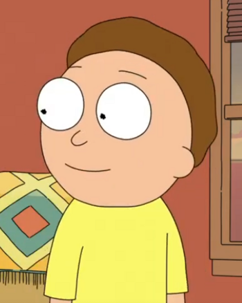

Mortimer "Morty" Smith Sr. is one of the two titular main protagonists (alongside Rick Sanchez) of Rick and Morty. He is the grandson of Rick and is often forced to tag along on his various misadventures. Morty attends Harry Herpson High School along with his sister, Summer. At the beginning of the series, Morty was shown to be an incredibly anxious and submissive teenage boy. However, after going on many so-called adventures with Rick, Morty has seemingly become more confident and his own person, independent from Rick, rather than a mere sidekick.
Currently, Morty is around 14 years old. He first met his grandfather, Rick Sanchez, when the latter moved into his home after supposedly being absent for 20 years. However, it was revealed that Rick is originally from Dimension C-137 and, after losing his wife and daughter, eventually moved into Morty's dimension to live with an adult version of Beth. However, curiously enough, it has been shown Rick knew Morty when he was a baby.
In "Close Rick-Counters of the Rick Kind", one of Rick's happy memories of Morty was picking him up as a baby. In "Get Schwifty", a picture on Birdperson's wall depicted Rick holding a baby, who, although had an ambiguous identity, was very likely Morty. It was originally assumed these babies were our Morty, but the revelation that Rick only just met Morty shortly before the beginning of the series contradicts this. It's possible the baby Rick picked up was an alternate version of Morty or Rick dropped in on this version of the Smith (who resided within the Cronenberged Dimension; our Morty's original home) family to meet him before leaving once again.
In "Raising Gazorpazorp", Beth accidentally admitted that when Morty was a baby, Jerry filled Morty with his own insecurities, making him the anxious teenager we see in the series. In the pilot episode, Morty's parents insist that he has some sort of learning disability. Rick later states Morty's low intelligent masks Rick's high intelligence, acting as a camouflage that prevents Rick's incredible intelligence from being tracked.
In "Rickmurai Jack" it is revealed that most Mortys were bred at The Citadel in order to serve Ricks, as well as act as camouflage. Whilst it's never explicitly stated that our Morty was among the Mortys who were created at The Citadel, Rick alludes to it, telling Morty "Jeez, you guys really are bred for forgiveness." However, it was also shown that Ricks manipulated circumstances for different versions of Jerry and Beth to meet, which would lead to them conceiving Morty in the future. This could also mean Morty was born, but only via interference from the Citadel. Rick's aforementioned dialogue could contradict this second possibility.
Despite it being alluded to, it can be reasonably assumed Morty was not created at the Citadel and was instead born naturally. The Smith family all seem to have memories of Morty growing up in their home[10], including Morty's original family from the Cronenberged Dimension. This is noteworthy, as it appears that once grown at the Citadel, Mortys are immediately given to a Rick as a sidekick. This would also disprove Morty being born through interference by the Ricks, as this was only done to create more Mortys for the same purpose.